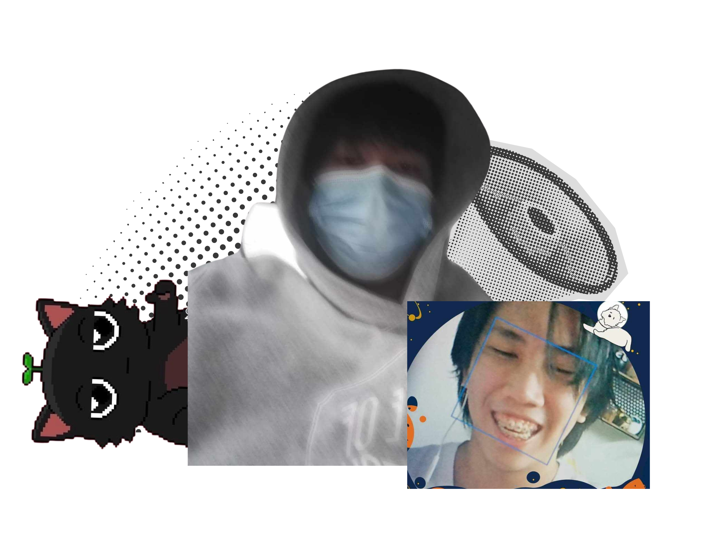
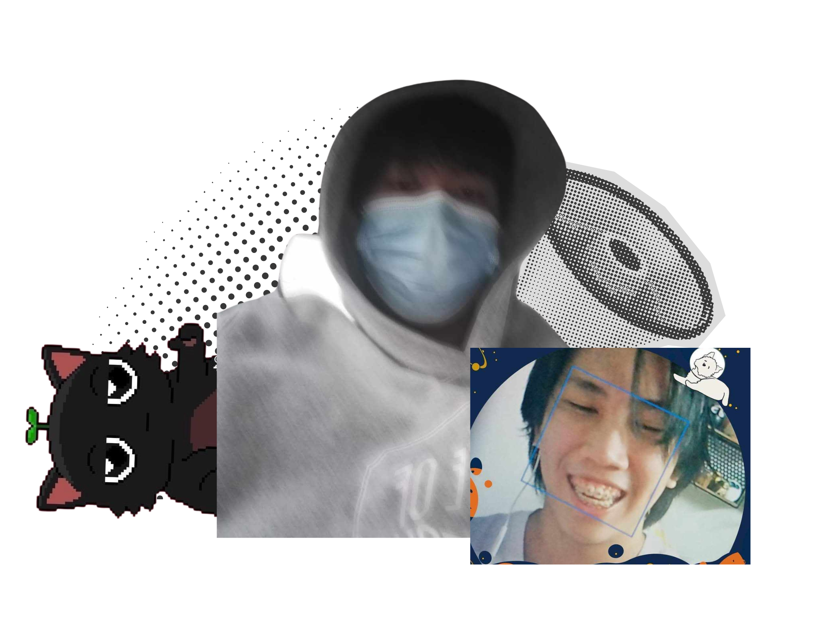
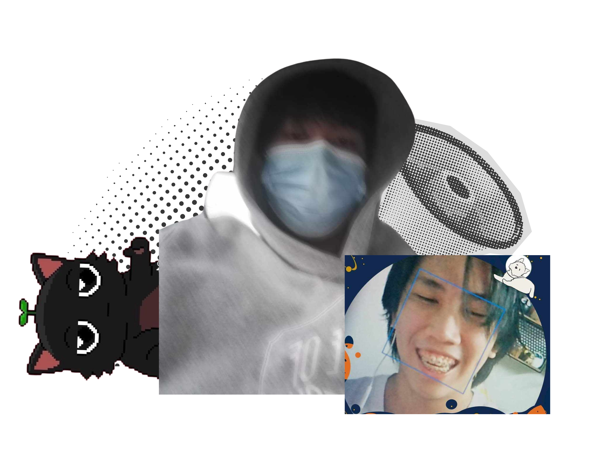
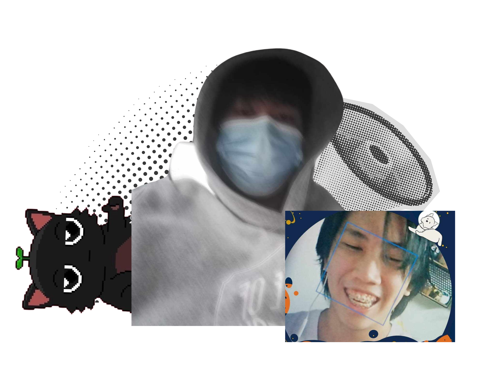

I am currently skilled with data handling, data analysis, and game development. I specialize in R programming, and Python. I am fairly decent with Shiny, and Unity. I hope to specialize in Database Management, Networking, or Artificial Intelligence.
I am Laud, a BSCS Student at UPLB. I have always been interested with technology ever since childhood. This lead me to tinkering with broken gadgets or appliances. Eventually, I would be enjoying robotics in highschool which I wrote papers for, where two won local awards, and one got to participate in a national competition. I'd rather take my time to learn for now, as I need to widen my skill range.